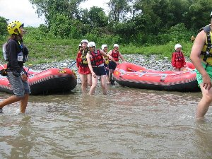
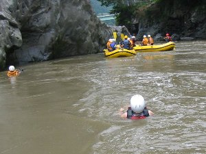
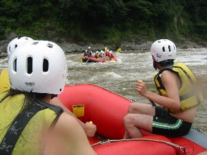
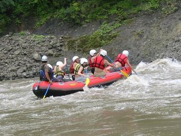
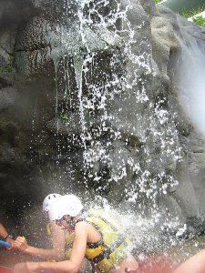

富士川ラフティング | ２００４年８月 |
|---|---|
| 思いっきり水を浴びたい！と言う意欲に燃えた六名で「ナチュラルアクション」のツアー「富士川ラフティング」に行ってきました。 ラフティングとは、ゴムボートに８人くらい乗って、みんなで漕ぎながら川下りをする事です。 当日は快晴！照りつける太陽が、日焼けしないかと気になります。お店に行く前に富士川を視察すると、『濁流』でした。茶色に濁った清流は、岩々の間を怒涛のごとく流れ、「まさか、ココは下らないよね。濁流がぶつかり合って危険そうだもんね」と参加者の心を不安にさせます。 お店にて説明を受けます。本日午前の部は６艇参加だそうです。水着に着替え、ライフジャケットとオール、ヘルメットを受け取りバスに乗り込みます。暑いのでウエットスーツは無しです。イズミさんだけ日焼けを気にして薄でのビニールジャケットを借ります。 だいぶ上流の方に行くかと思いきや、バスで３分も行かない所でした。芝川駅の近くです。これでは先ほど見た濁流ポイント通過は確実です。^_^; | |
|  ボートを引っ張り出発です |  浮かんでいるだけで気持ちいい♪ |
| 流れの緩やかな所で、こぎ方の講習を行います。今回タスマンズから６名の参加者で、一名のガイドが付いて一つのゴムボート（チーム）です。 練習の時、先頭に座ったＲ２（仮名）さんのテンポが皆と合わず、ガイドさんから「大丈夫？大丈夫？」と真剣に見つめられていました。確かに、イチ（オールを入れる）、ニィ（後ろに漕ぐ）のタイミングで、ニィでオールを入れるのですから、後ろの漕ぎ手とぶつかります。心配もするでしょう。 今回のガイドは”コイ”さん。体の大きな頼れるお兄さんって感じです。「今日は水量が多いのでガッツリ漕ぎましょう！」のかけ声に、何故か皆Ｒ２（仮名）さんを見ます。 艇が次々と出発し、我々の番です。始めに「前釜の瀬」です。水面が波打つように三角になっています。前のチームを見ると、激しく揺れているのが見て取れます。我々の艇も上下に揺れ、何故か回転しながらもクリアー！すぐさま、次の難所「釜口の瀬」です。ここが先ほど下見した、激流の所です。川幅がいきなり狭くなり、一気に集められた水が、岩にぶつかりながら左へと回り込みます。流れに流され、艇の前方がガクッと下がった所に、前から大量の水が注ぎ込まれます！「わー、気持ち〜」そう、気持ちいいのです！水をバシャバシャ浴びるのが最高です！ | |
|  先に行くボートが気になります |  ガイドの指示に従い漕ぎまくれ！ |
| 流れの緩やかな所まで来ると、コイさんが「みんな左側に寄って！早く！」と言いながら、左に傾いた艇をさらに押し込み、コイさんが故意にゴムボートをひっくり返します。 あー、ライフジャケットで川に浮かんでるって、何か気持ちいいです！ その後も、幾つかの瀬を下り、最終ポイントへ。 最後は、ボートを降り、岩の上に登り、そのまま４〜５ｍ位の所から、水面へダイブ！！ あー気持ちいい〜〜〜 ラフティング終了後、近くの中華料理店（ラーメン屋とも言う）へ。ナチュラルアクションでお勧めの、唐揚げを注文。一皿1200円と少々値が張るモノの、これが美味しい♪カッパえびせんみたい。と言われていたが、本当に「やめられないとまらない」サクサクです。ラーメンも、私が頼んだ味噌ラーメン、もやしがテンコ盛り！スーパーで売っている袋で、２〜３袋分の量ではないだろうか！美味しいです。（他メニューでもやしラーメン有り。どんな量なんだ？） | |
 岩の上から水面にダイブ！ |  支流の滝で水浴びです |
| 帰りに、翠紅苑と言う旅館で温泉に浸かって帰りました。（ここも気持ち良かったよ。） 今度はダッキーか？キャニオニングか？ コメント：かむい ラフティングって川を下るだけかと思ったら、ボートを降りて（落とされて！水飲ん じゃいました(**)ケホッ） 川の中を流れに身をまかせ泳いだり（←これがなんとも言え ない浮遊感。。。最高に気持ち良かった！）、崖からダイブしたり（←コレ、急流よ り何よりスリルでした〜！私はかなり逃げ腰でしたが、たすまんずメンバーは次々と あっさり飛び降りていくし、覚悟を決めて飛びました！人のを見てるとあっという間なのに、ああいう（落ちてる）時間ってホント長く感じるんですね。想像以上に水面 に着くまで時間がかかって怖かった〜。）等々内容盛り沢山。本当に楽しく気持ちよ かったです。また行きたいですね。 | |
| 写真：べっしー、コメント：べっしー＆かむい | |